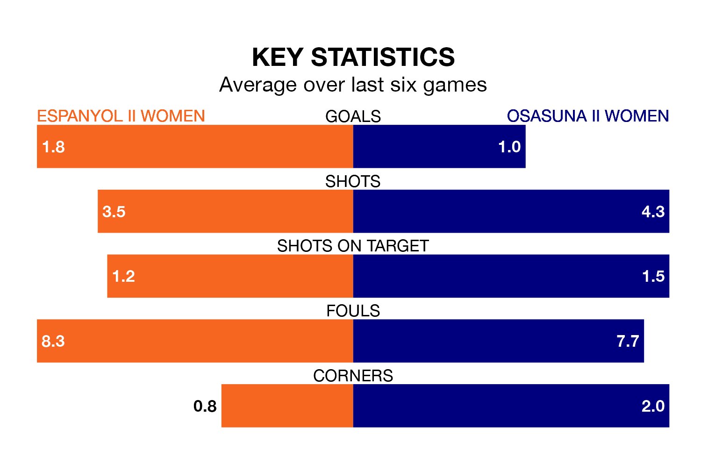

The Segunda Federación Femenina's top two sides face each other in Sunday's early kick-off, when zero-placed Espanyol II Women host zero-placed Osasuna II Women.
Espanyol II have picked up four wins and three draws from 26 games so far this season, and sit eight points below the visitors going into the 11.30am match.
Osasuna II, meanwhile, have won five and drawn eight, picking up 23 points.
Espanyol II are in mixed form in the Segunda Federación Femenina, with two wins and a draw from their last six games.
With a win and two draws over that period, Osasuna II's form is slightly worse – they have taken five points from 18, compared to the hosts' seven.
With 29 goals in 26 games so far this season, Espanyol II are the league's joint--3th-lowest scorers with 1.1 goals per game. And they are conceding more than average, letting in 60 goals at a rate of 2.3 per game.
The away team are also below average scorers, with 1.2 goals per game, compared to a league average of 1.3. They have conceded 1.8 goals per game.
Espanyol II's last match was on April 6, a 2-1 win against Bizkerre Women, with getting the goals for Espanyol II.
Osasuna II drew 1-1 with Pradejón Women last time out, also on April 6, with on the scoresheet.
Updated: 11:20 (UTC), 09/04/24